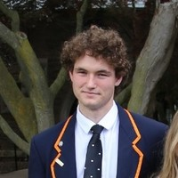

---
# Feel free to add content and custom Front Matter to this file.
# To modify the layout, see https://jekyllrb.com/docs/themes/#overriding-theme-defaults

layout: default
title: Home
---
<div class="landing-page">
    
    <p class="landing-page__text">
        A little bit about me: I am a second year computer science co op student at the University of Victoria. I am
        from Grimsby, Ontario, which is a town near Niagara Falls. In my free time I enjoy running, coding, and learning
        in general. I am currently training for a marathon. My favorite programming language is Rust because it confuses
        me at times and I enjoy that.
    </p>
</div>
{% include bloglist.html %}